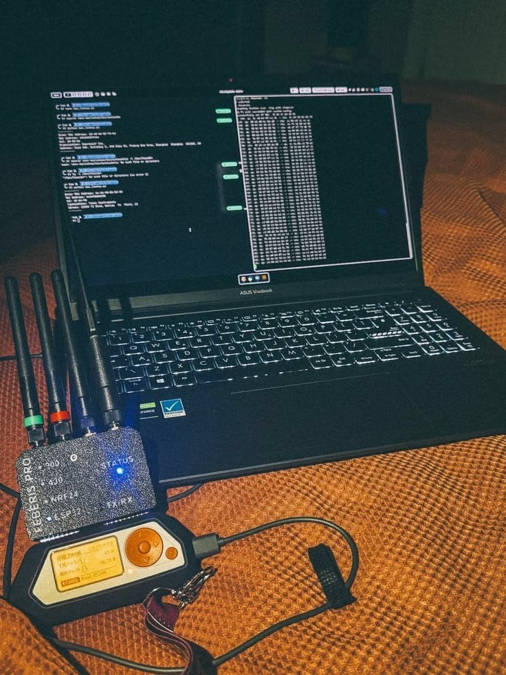

Huthef Abdirizak

Chicago, Illinois
Professional Summary
College student pursuing studies in cybersecurity and information technology with an interest in computer systems, networking, security, and software development. I am seeking opportunities to develop my technical skills and gain professional experience in the technology industry.
Education
Illinois Institute of Technology
Bachelor's Degree Studies in Cybersecurity and Information Technology
Chicago, Illinois
City Colleges of Chicago
Associate Degree
Chicago, Illinois
Technical Skills
- HTML
- Java
- Python
- Computer Networking
- Cybersecurity Fundamentals
- Linux and Kali Linux
- Windows
- Git and GitHub
Experience
Amazon Fulfillment Center
Fulfillment Associate
- Work effectively in a fast-paced team environment.
- Follow operational and workplace safety procedures.
- Use technology and internal systems to complete daily tasks.
- Assist with multiple operational responsibilities as needed.
Academic Projects
Web Development Projects
Created HTML web pages and practiced proper document structure, navigation, validation, and directory-based file organization.
Cybersecurity Labs
Completed hands-on exercises involving networking, Linux, Windows, certificates, virtual machines, and cybersecurity concepts.
Professional Goals
My goal is to gain internship experience in cybersecurity or information technology and continue building practical technical skills. I am particularly interested in security operations, networking, system administration, and protecting information systems.
Interests
- Cybersecurity
- Information Technology
- Soccer
- Fitness
- Technology